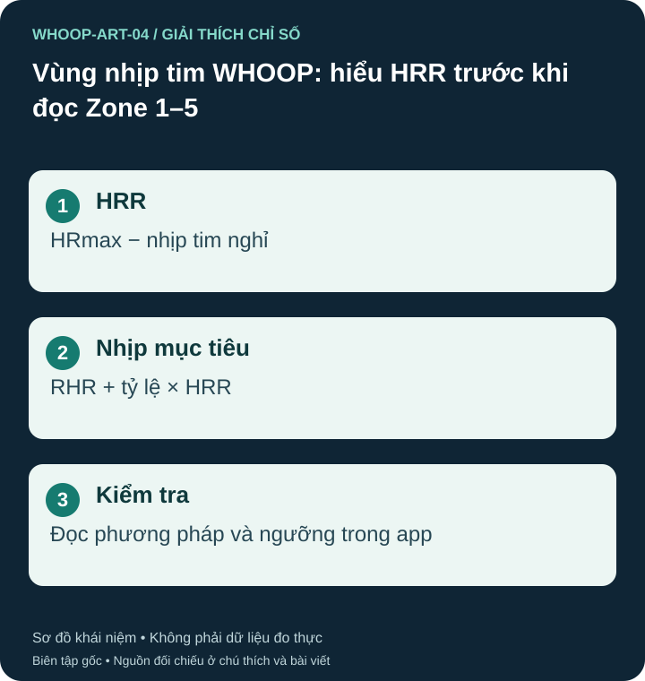

Cùng nhãn Zone 2 có thể khác cách tính
Tài liệu WHOOP hiện mô tả phương pháp mặc định dựa vào heart rate reserve, tức nhịp tim dự trữ: HRR = HRmax − RHR. Nhịp tim tại một tỷ lệ được tính bằng RHR + tỷ lệ × HRR. Công thức này khác cách lấy trực tiếp phần trăm HRmax; các cấu hình thủ công có thể dùng phương pháp khác. S07

Ví dụ minh họa: HRmax 190 và RHR 60 cho HRR 130 lần/phút. Mức 60% HRR tương ứng 138 lần/phút, trong khi 60% HRmax chỉ là 114. Cần biết mẫu số trước khi so ngưỡng giữa hai ứng dụng.
Các vùng trong tài liệu hiện tại
WHOOP mô tả Zone 1 là 40–60% HRR; Zone 2 là 60–70%; Zone 3 là 70–80%; Zone 4 là 80–90%; Zone 5 là 90–100%. Ngưỡng thực tế và cách xếp đúng điểm ranh giới phải đọc trong ứng dụng. Zone 0 là phần dưới ranh Zone 1 trong cấu hình tương ứng. S06 S07
Số vùng không thay thế cảm nhận gắng sức
Nóng, mệt, thuốc ảnh hưởng nhịp tim hoặc tín hiệu nhiễu có thể làm việc bám một khoảng nhịp tim khó diễn giải. Hãy xem vùng cùng khả năng nói chuyện, cảm nhận và mục tiêu buổi tập. Các khuyến nghị vận động của WHO không đồng nghĩa chính xác với một nhãn vùng độc quyền của WHOOP. S04
Nếu vùng được tính khiến buổi nhẹ luôn rất khó, hãy kiểm tra HRmax, RHR và phương pháp cài đặt. Không cần tự làm bài gắng sức tối đa để sửa một biểu đồ; người có bệnh tim hoặc triệu chứng khi tập nên trao đổi với nhân viên y tế.
Nguồn tham khảo và phạm vi hỗ trợ
- S06 — WHOOP. WHOOP Heart Rate Zones Explained: Why HRR Works for You. Phạm vi: HRR, công thức Karvonen; Zone 1 40–60%, Zone 2 60–70%, Zone 3 70–80%, Zone 4 80–90%, Zone 5 90–100% HRR.
- S07 — WHOOP. Why WHOOP Uses Heart Rate Reserve, Not Max Heart Rate. Phạm vi: HRR mặc định; có tùy chỉnh; RHR theo nền trượt; HRmax ước tính và cập nhật từ dữ liệu.
- S04 — World Health Organization. Physical activity. Phạm vi: Vận động tốt hơn không vận động; tập cơ lớn ít nhất 2 ngày/tuần; hoạt động aerobic.
Bài biên soạn độc lập bởi Pulse & Vitality; tài liệu WHOOP và các nguồn khác được dùng để tham khảo. Đăng ngày 2026-10-27; nguồn đối chiếu 2026-10-26. Nội dung giáo dục, không thay thế đánh giá, chẩn đoán hoặc điều trị y tế.